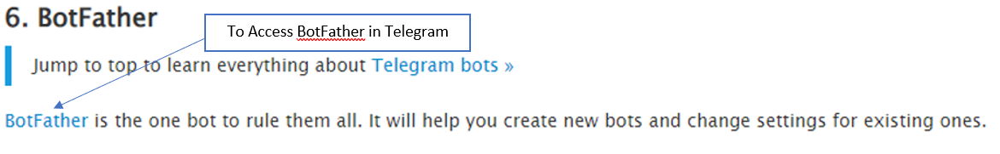
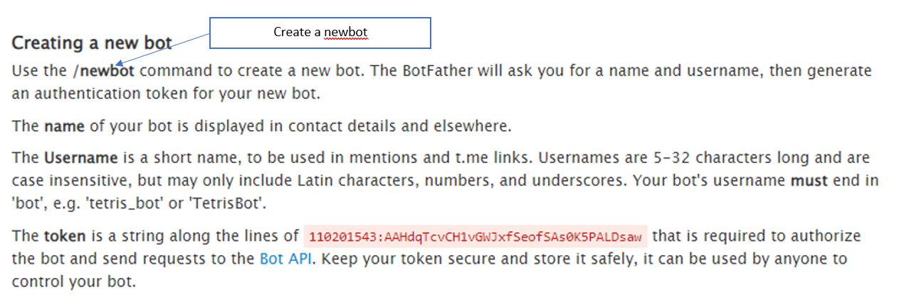
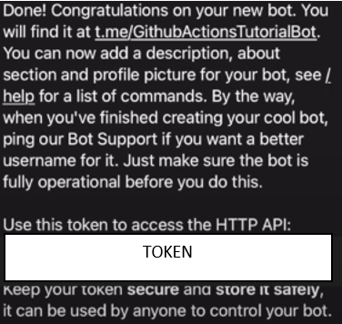
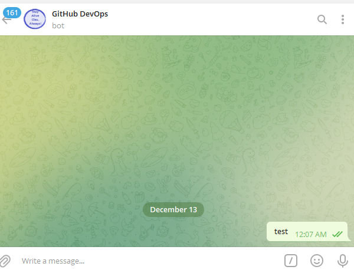
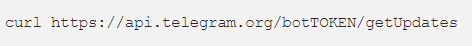
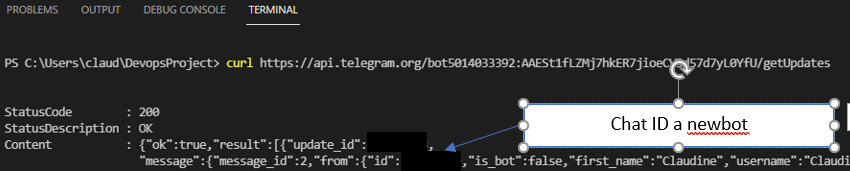

- To create Chat ID and Token, we need "BotFather".
Telegram BotFather
- Access BotFather in Telegram

- Click "/newbot" to create a new bot. Follow the instructions in Telegram until you obtain the token

- When the creation is done, a TOKEN will be generated.

- In the telegram, find your User ID and send a message.

- Using the terminal, check the Chat ID using the command below. Replace the word "TOKEN" with the actual token.

- The Chat ID is generated. Refer to the diagram to pick the correct ID.

Now you have the Chat ID and TOKEN, you can insert them in the "SECRET" section.